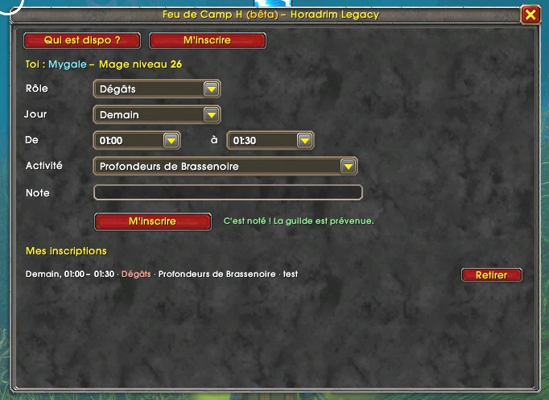
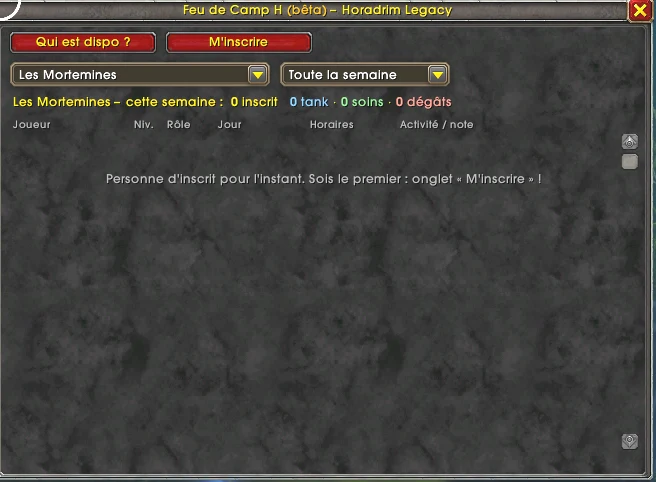
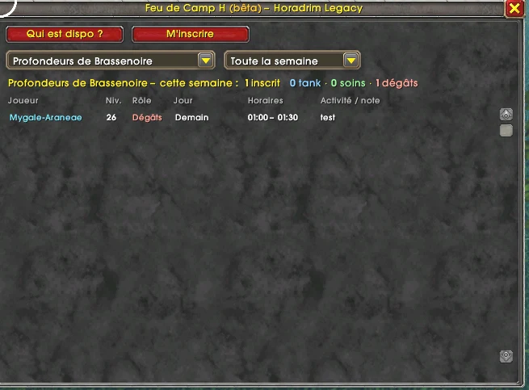

Feu de Camp Bêta
Un planificateur d'activités directement en jeu : donjons, quêtes élites ou autres sorties, on se retrouve autour du feu de camp ! Chacun indique sa classe, son rôle, sa guilde, ses horaires et ce qu'il veut faire, et tout le monde voit en un clic qui est dispo.
📅 Mise à jour le 14 novembre 2026🛠 Patch 1.60.1.70938
Version 1.10.0-beta · WoW Forever (patch 1.60.1) · 13 Ko chacune. Les deux versions sont indépendantes : tu peux installer les deux.
Un planificateur d'activités
Feu de Camp sert à organiser toutes les activités de groupe :
- Donjons : un sous-menu avec les 32 donjons de WoW Forever, des anciens aux nouveaux, dont les 4 ailes du Monastère écarlate.
- Quêtes élites : un sous-menu des zones, du Bois de la Pénombre aux Maleterres, avec les niveaux conseillés.
- XP : un sous-menu des zones de montée de niveau, de la Forêt d'Elwynn à Silithus, pour monter à plusieurs.
- Raids : Profondeurs des Saisons (10), Sommet d'Hyjal (20) et Repaire d'Onyxia (40), pour préparer les sorties de guilde dès le 9 décembre.
- JcJ : Goulet des Chanteguerres, Bassin Arathi, Vallée d'Alterac ou JcJ sauvage.
- Farm : or, minerai, herbes, cuir, tissu ou réputation.
- Métiers : monter un métier ensemble, ou trouver un artisan.
- Autre : sortie de guilde ou toute autre activité, à préciser dans la note.
Comment ça marche
- Tu t'inscris en quelques clics : ta classe, ton niveau et ta guilde sont remplis tout seuls. Tu choisis ton rôle (tank, soins, dégâts), le jour, tes horaires et l'activité dans les menus : donjon, quêtes élites, XP, raid, JcJ, farm, métiers…
- Tu vois qui est dispo : choisis une activité, par exemple « Les Mortemines », ou tout un menu d'un coup (« Tous les donjons », « Toute l'XP »…), « Aujourd'hui », et coche les rôles qui t'intéressent (tank, soins, dégâts) dans les menus déroulants, et la liste affiche tous les inscrits, avec le nombre de tanks, de soigneurs et de dégâts.
- Tu montes le groupe directement : un bouton pour envoyer un message privé, un autre pour inviter le joueur dans ton groupe.
- Tu es prévenu quand quelqu'un te rejoint : dès qu'un joueur s'inscrit à la même activité, le même jour et sur des horaires qui recoupent les tiens, une alerte s'affiche dans ton chat. Et quand il y a de quoi faire un groupe (1 tank, 1 soigneur, 3 dégâts), tu reçois « Groupe complet possible ! ».
- Le groupe se remplit sous tes yeux : dans « Mes inscriptions », chaque créneau indique combien de joueurs sont dispo avec toi, et passe au vert quand le groupe est complet. À la connexion, un résumé te dit combien de joueurs correspondent à tes inscriptions.
- Une petite note pour préciser : « il manque un soigneur », « j'ai la quête de VanCleef »…
- Les inscriptions des jours passés s'effacent toutes seules.
En images



Installation
- Ferme le jeu et télécharge la version qui te concerne (Horadrim Legacy ou autre guilde).
- Décompresse-le et copie le dossier FeuDeCamp_H ou FeuDeCamp dans
World of Warcraft\_forever_\Interface\AddOns\. - Lance le jeu : sur l'écran des personnages, bouton AddOns, vérifie que Feu de Camp est coché.
- En jeu, tape /dispo pour ouvrir la fenêtre. Si tu as installé les deux versions, /dispo ouvre Feu de Camp H et /feudecamp la version ouverte.
- Pour couper ou remettre les alertes : /dispo alertes. Pour le son : /dispo son.
- Un souci ? /dispo sync redemande les inscriptions aux joueurs connectés, et /dispo debug affiche des infos techniques à nous envoyer.
Tu avais testé une version précédente ? Supprime les anciens dossiers HoradrimDispo ou DungeonPlanner de ton dossier AddOns.
Bon à savoir
- Feu de Camp H ne fonctionne que pour les membres de Horadrim Legacy : leurs inscriptions restent entre eux.
- Feu de Camp est ouvert à tous, mais il faut indiquer sa guilde pour s'inscrire : elle se remplit toute seule si tu es dans une guilde. Dans « Qui est dispo ? », un menu permet de n'afficher qu'une guilde.
- Les addons s'échangent les inscriptions par le canal caché de ta guilde et, pour joindre les autres guildes, par un canal de discussion caché : tu ne vois rien passer dans ton chat.
- Il faut être de la même faction et sur le même ensemble de règles : la Horde et l'Alliance ne peuvent pas partager un canal.
- Les inscriptions s'échangent entre joueurs connectés qui ont l'addon. À la connexion, l'addon récupère aussi celles des joueurs hors ligne auprès de ceux qui les connaissent déjà.
- Rien n'est envoyé en dehors du jeu : pas de compte, pas de site, pas de serveur.
Sécurité
- Tout est vérifié à la réception : classe, niveau (1 à 60), rôle, jour (dans les 7 prochains jours), horaires et activité doivent être valides, sinon l'inscription est ignorée.
- Aucun code caché : les notes et les noms de guilde sont nettoyés de tout code d'interface (couleurs, images, liens) et limités en longueur.
- Anti-spam : un joueur qui envoie trop de messages est ignoré pendant 5 minutes, et chacun est limité à 15 inscriptions actives.
- Personne ne parle à ta place : une inscription transmise par un autre joueur ne peut jamais remplacer ou effacer ce que tu as envoyé toi-même.
- Feu de Camp H vérifie en plus, dans la liste de la guilde, que l'auteur de chaque message est bien membre de Horadrim Legacy.
À venir
Selon vos retours : un bouton près de la minicarte, les raids à partir du 9 décembre, une alerte quand un groupe est complet… Dis-nous ce qui te manque via la page Contact.